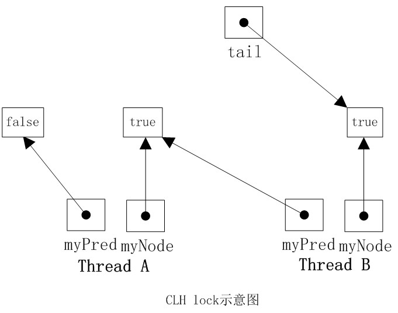

NUMA与SMP
SMP：Symmetric Multi-Processor,对称多处理器结构；指服务器中多个CPU对称工作，每个CPU访问的内存地址所需时间相同，主要特点是共享，包括内存、CPU、I/O的共享。优点是保证内存一致性，缺点是共享的资源可能成为性能瓶颈，随着CPU数量的增加，每个CPU访问相同的内存资源，可能会导致内存访问冲突，可能会导致CPU资源浪费。常用PC机就是这种。
NUMA：Non-Uniform Memory Acess，非一致内存访问；指将CPU分为多个CPU模块，每个模块由多个CPU组成，并且具有独立的本地内存、I/O槽口等，模块之间可以通过互联模块相互访问，访问本地内存的速度远远高于访问远地内存（系统其它模块的内存）的速度，这也是非一致性存储访问的由来。优点是可以较好的解决SMP系统的扩展问题，缺点是访问远地内存延时过高，因此当CPU数量增加时，系统性能无法线性增加。
CLH
CLH lock queue通常被用来实现spin lock，它在SMP系统架构下非常有效，在NUMA系统架构下性能很差的算法。
原理描述
节点：CLH lock queue的节点QNode有一个名为locked的字段，当该字段为true时，说明当前线程需要获取锁，且不释放锁；如果该字段为false时，说明当前线程释放了锁。
获取锁：当一个线程需要获取锁时，它会创建一个新的QNode，然后将其locked字段设为true表示需要获取锁，然后对tail进行getAndSet操作，使自己成为队尾，同时获取之前其前驱结点的引用myPred，然后以前驱结点myPred的locked状态自旋。
释放锁：当一个线程需要释放锁时，它会将其locked字段设为false表示释放锁，然后对tail进行getAndSet操作。
图解

如上图所示，线程A需要获取锁，其myNode域为true，些时tail指向线程A的结点，然后线程B也加入到线程A后面，tail指向线程B的结点。然后线程A和B都在它的myPred域上旋转，一量它的myPred结点的locked字段变为false，它就可以获取锁扫行。明显线程A的myPred locked域为false，此时线程A获取到了锁。
实例代码
//CLH lock queue
public class CLHLock implements Lock {
//使用AtomicReference保证对尾指针的对象进行原子方式的更新。
private AtomicReference<QNode> tail = new AtomicReference<QNode>(new QNode());
//使用ThreadLocal，将QNode绑定到每一个线程上
private ThreadLocal<QNode> myPred;
private ThreadLocal<QNode> myNode;
public CLHLock(){
tail = new AtomicReference<QNode>(new QNode());
myPred = new ThreadLocal<QNode>(){
protected QNode initialValue() {
return new QNode();
}
};
myNode = new ThreadLocal<QNode>(){
protected QNode initialValue() {
return null;
}
};
}
@Override
public void lock() {
QNode node = myNode.get();
node.locked = true;
QNode pred = tail.getAndSet(node);
myPred.set(pred);
while(pred.locked){//自旋等待pred节点的锁释放
}
}
@Override
public void unlock() {
QNode node = myNode.get();
node.locked = false;
myNode.set(myPred.get());
}
}
// QNode
public class QNode {
public volatile boolean locked;
}
// Lock
public interface Lock {
void lock();
void unlock();
}
优缺点
CLH队列锁的优点是空间复杂度低（如果有n个线程，L个锁，每个线程每次只获取一个锁，那么需要的存储空间是O（L+n），n个线程有n个myNode，L个锁有L个tail），CLH的一种变体被应用在了JAVA并发框架中。唯一的缺点是在NUMA系统结构下性能很差，在这种系统结构下，每个线程有自己的内存，如果前趋结点的内存位置比较远，自旋判断前趋结点的locked域，性能将大打折扣，但是在SMP系统结构下该法还是非常有效的。一种解决NUMA系统结构的思路是MCS队列锁。
日期：2011-11-12
参考资料：A Hierarchical CLH Queue Lock、JAVA并发编程学习笔记之CLH队列锁、Inside AbstractQueuedSynchronizer (2)、JAVA.util.concurrent 同步框架(翻译二)